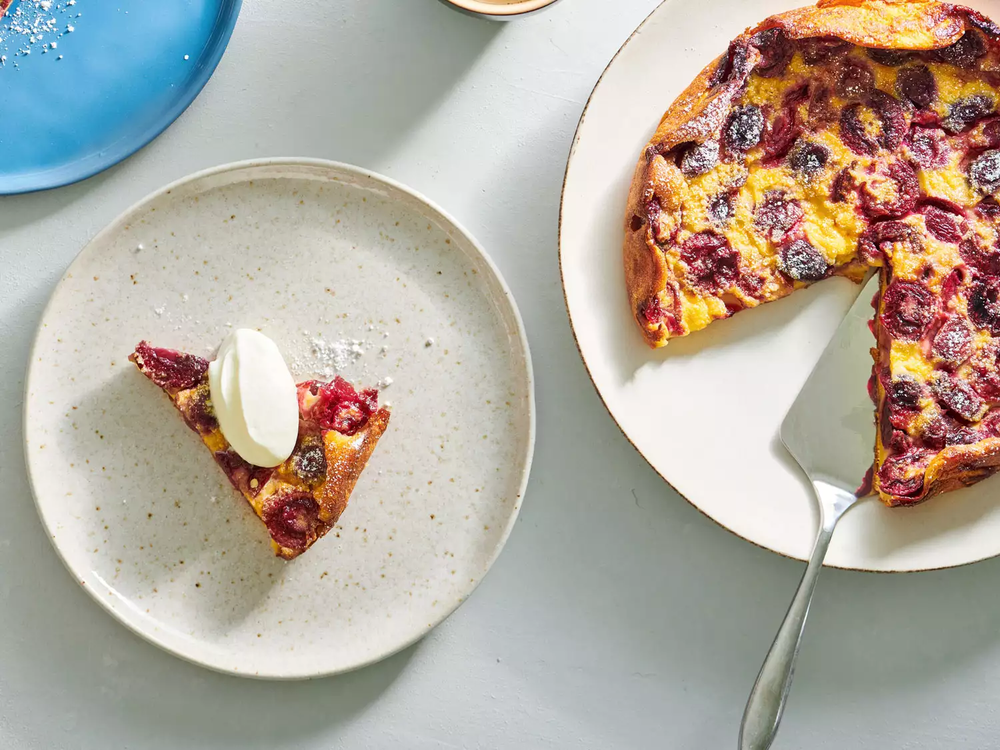

Classic Cherry Clafoutis

Dan Gritzer's Cherry Clafoutis
This is a recipe you make if you've never made dessert but want to your friends to think you have.
Ingredients:
- 1/2 cup all-purpose flour (about 2 1/2 ounces or 75g)
- 3 tablespoons granulated sugar (about 1 1/4 ounces or 40g)
- 1/4 teaspoon (kosher) salt
- 1 cup whole milk
- 2 large eggs, lightly beaten
- 2 tablespoons unsalted butter, melted, plus more for greasing
- 1 tablespoon kirsch (optional)
- 1/8 teaspoon pure vanilla extract or 1 vanilla bean, split and seeds scraped
- 3/4 pound sweet cherries, pitted (see notes)
- Powdered sugar, for serving
- Whipped cream, for serving (optional)
Instructions:
Preheat oven to 350°F (180°C).In a medium mixing bowl, stir together flour, sugar, and salt.
Whisk in milk, eggs, butter, kirsch (if using), and vanilla extract or seeds until a smooth batter forms.
Grease a baking dish, tart pan, or cast iron skillet (about 9 inches in diameter) with butter.
Scatter cherries all over bottom. Pour batter on top and bake until clafoutis is puffed and browned and a knife inserted in center comes out clean, about 50 minutes.
Let cool slightly, then slice and serve, sprinkling powdered sugar on top. Serve with whipped cream, if desired.
Notes:
If using a vanilla bean, reserve the scraped bean for another use (you can stick it in a container of sugar to create vanilla sugar, for instance).
We like pitted cherries because the clafoutis is easier to eat that way, but feel free to leave the cherries whole if you prefer;
that's a more traditional way to do it, and some people like the subtle bitter almond flavor the pits add to the dessert.